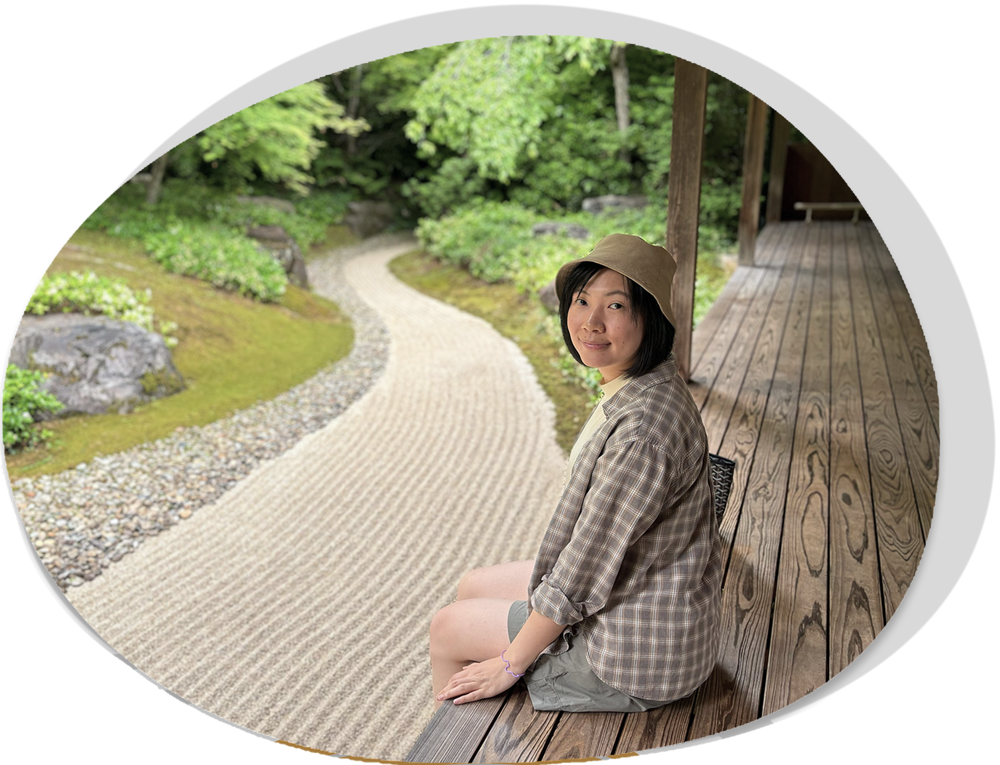
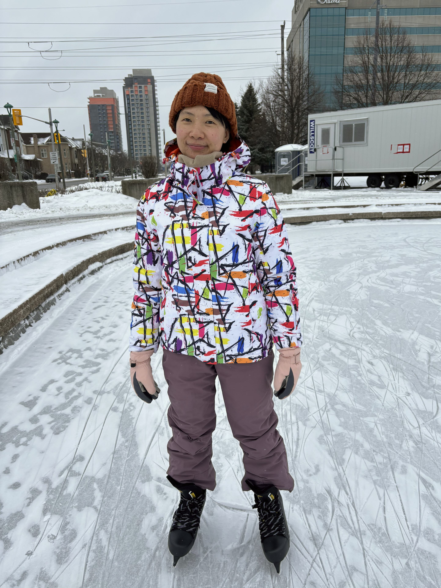
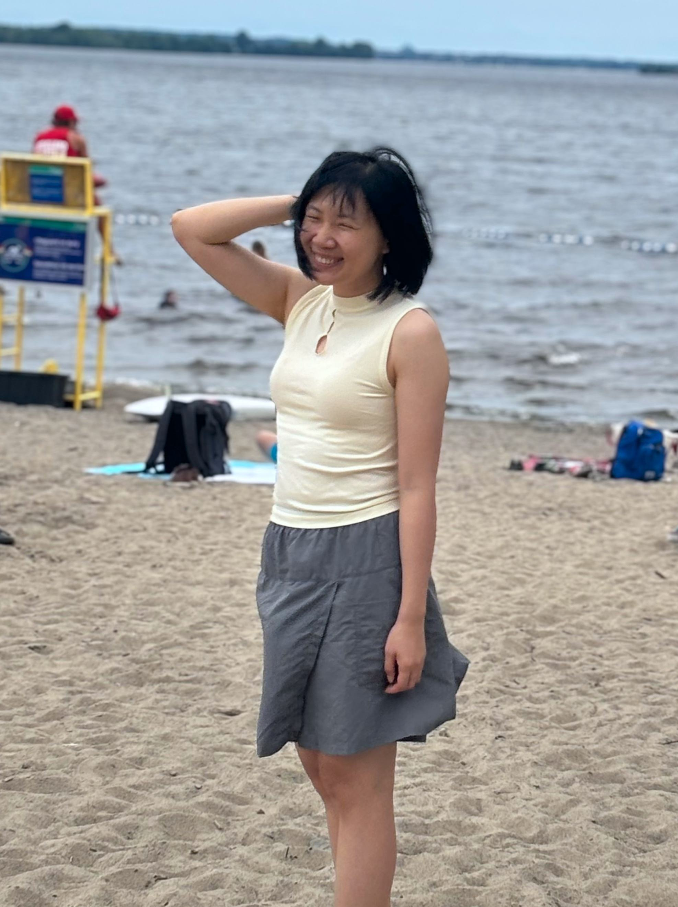
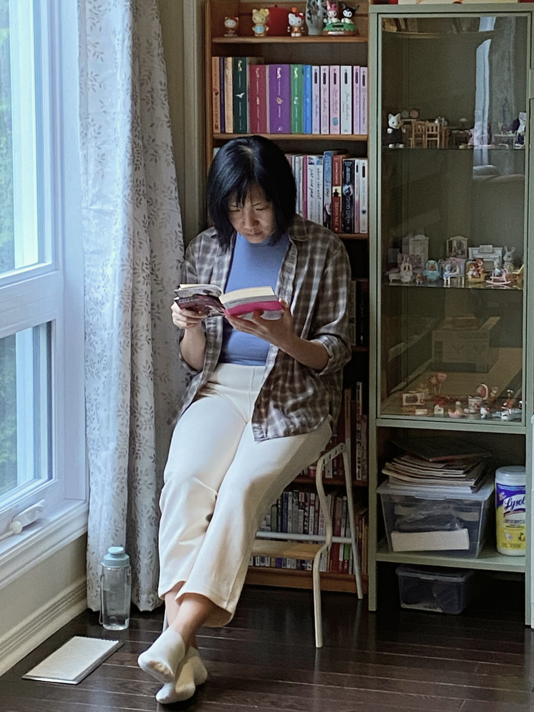

Hello, I’m Xinyan Chen

For the past five years, my canvas was three-dimensional. As an interior designer, I guided human behavior and built emotional connections within physical environments through layout, materials, and color strategy. During this journey, serving as a Color Road trend lecturer—jointly developed by CMG (Color Marketing Group) and RENOLIT—allowed me to master the art of visual storytelling, gaining deep expertise in how strategic palettes communicate brand depth and evoke intuitive user emotions.
My passion for humanities, literature, and photography—especially my first-hand experience exploring Japanese traditional gardens, alongside a lifelong passion for East Asian history, classic palettes, architecture, traditional attire, and intricate patterns—has profoundly shaped my design worldview. Equally, I am deeply fascinated by contemporary pop culture and cross-cultural trends. I closely analyze how East Asian visual concepts—such as the groundbreaking creative direction led by Min Hee-jin—reframe global youth trends through unique nostalgia and digital storytelling. These rich cultural influences, both classic and modern, birthed my core philosophy: digital design should never be a cold, homogenized blueprint; it should possess cultural warmth and a striking visual rhythm that touches the soul.
My recent two-year intensive studies in Interactive Media Design at Algonquin College marked a powerful evolution. I realized that whether transforming the fluid "Qi" (momentum) of Eastern art into intuitive Western user flows, or translating rich traditional palettes into data-driven color systems compliant with North American accessibility (WCAG) standards, the essence remains unchanged: solving complex human problems and creating universal connection.
Today, I bring my proven client-facing communication, rigorous standards for pixel-perfect typography, and deep cross-cultural aesthetic foundation to the field of UX/UI design. I don’t just engineer frictionless user journeys; I craft digital narratives that empower brands with cultural nuance and aesthetic depth.
Where can you find me when I’m not working?


